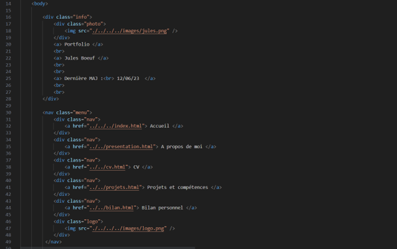
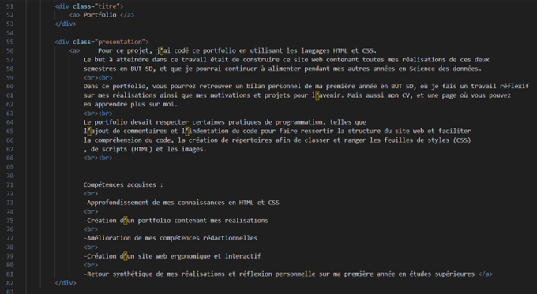

Portfolio
For this project, I coded the first version of this portfolio using HTML and CSS. The goal of this work was to build a website containing all my work from my first two semesters for my Data Science degree (BUT Science des Données), and that I could keep updating during the following years.
In this portfolio, you will find a personal review of my first year in the BUT SD program, where I reflected on my work along with my motivations and plans for the future. You will also find my resume, and a page where you could learn more about me.
The portfolio had to follow certain coding practices, such as adding comments and indenting the code to make the code easier to understand, and using different folders to sort style sheets (CSS), scripts (HTML), and images.
Skills learned:
- Deepening my knowledge of HTML and CSS
- Building a portfolio that shows my work
- Improving my writing skills
- Building a website that is easy to use and interactive
- Giving a clear summary of my work and reflecting on my first year of higher education
Illustrations


Overview of the HTML script for this page, on the old version of the portfolio